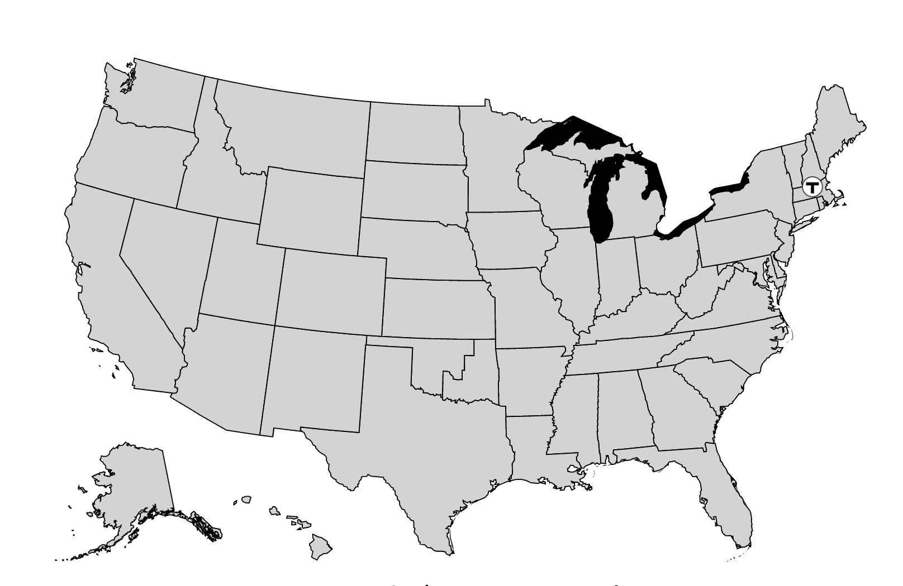
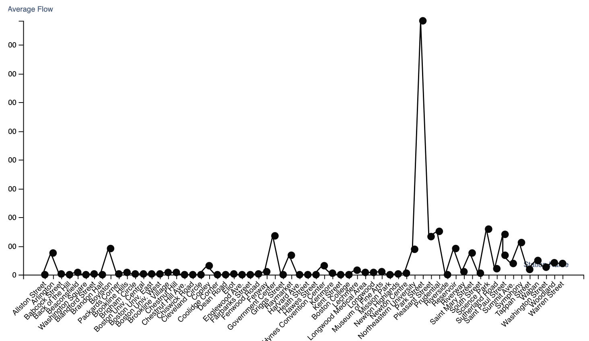
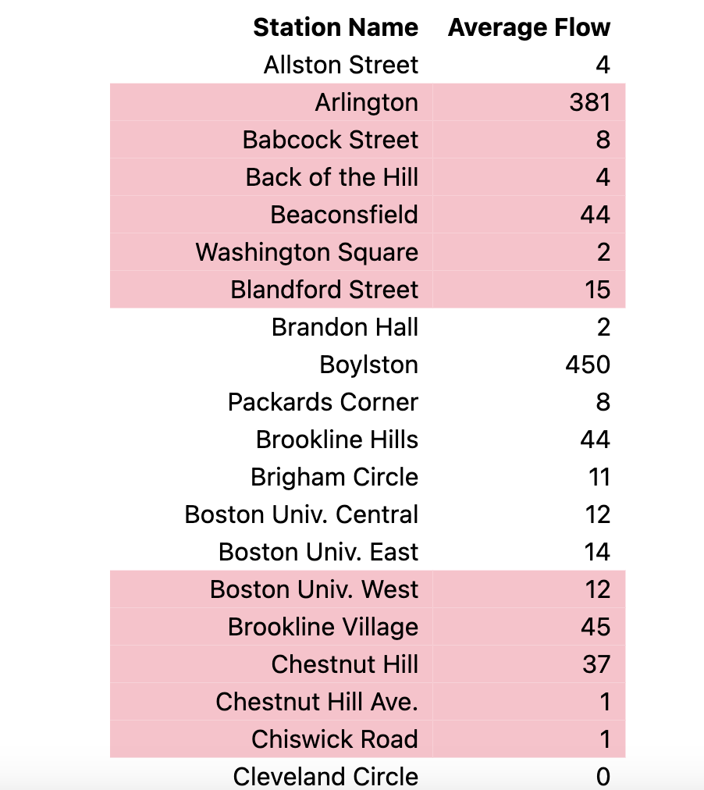
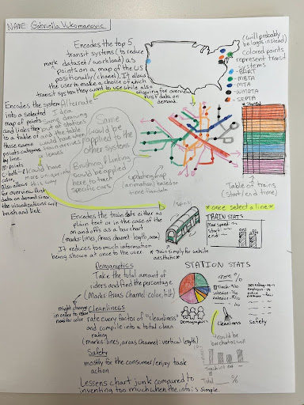
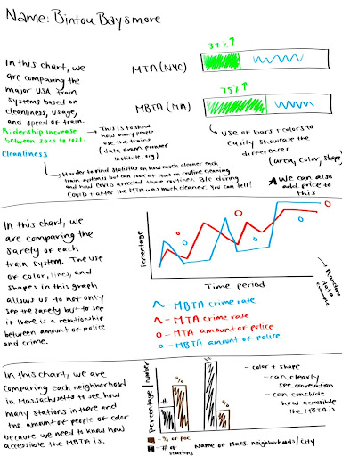

Bintou Baysmore, Pranav Praburam, Gabriella Vukomanovic
Project-long Course Project as part of COSI 116A: Information Visualization, taught by Prof. Dylan Cashman, Brandeis University.
Boston's MBTA is more than just a transit system; it's the heartbeat of the city, connecting communities and keeping the pace of urban life moving. With its network of buses, subways, commuter trains, and boats, it's a symbol of Boston's commitment to getting people where they need to go. However, as the oldest transit system in the US, the MBTA faces many issues regarding its infrastructure and accessibility. These problems exhibit trends which my group was able to examine and create patterns of. We believe that by showing these patterns, we can highlight what's working and what's not, and maybe even help find ways to make the MBTA better for everyone who relies on it.
Embedded MP4 demo video using the HTML5 <video> tag.



MBTA Transit Presentation COSI 116
All of the data we used for this project were in CSV format, which made sense as we were looking for arrival times and ridership data. The data, however, contained lots of junk information such as the train ID and other various object IDs. As a part of the preprocessing stage, we reformatted the sheets before we used them on our web page. We had to delete columns and organize the data by dates but once that was done, we converted the sheets to JSON and XML files to embed them into the HTML of our code. This allows for a highly interactive experience where you can manipulate the data without reloading the page.
Domain tasks: The first task was that we had to find data in the CSV format that described either transit arrival times or ridership across all stations and lines. Then we had to convert the files into JSON and XML files. Lastly, we had to embed this into our code to get the visualizations displayed. Processes: The first task was very research based as we had to parse several nationally funded databases to find relevant CSV files. The second task consisted of removing junk data and formatting the files in a way that, once converted to XML or JSON, could be easily embedded into the code. The final task focused on the coding, as the files were then integrated into our website’s HTML body. Goals: The tasks were designed so that each step served as a direct building block to the visualization of the data. The end goal of the first task was to have a good set of data that we could base our visualizations on. The end goal of the second task was to filter the data of any junk information and to reformat the data appropriately. The end goal of the third task was to embed the data into the website to allow the client to interact with and view the visualizations. Abstract tasks for domain problems: The only abstract task we were thinking about was the overall structure of the website and how the visualizations were going to fit in with the layout. This was an implicit task that we focused on in the sense that we thought about structure every step of the way, from task one, all the way to task three. The layout of the website had to be modified a few times but eventually, was sorted out in the end. Data Analysis
Task Analysis
Design Process: As seen below, our starter sketches were very primitive compared to our final designs, yet they helped us imagine what kind of data we would need. It was only through the designs listed below which helped us decided on the types of data we were going to show initially. From this point forward, we decided on how the data could be read the easiest by deciding on the appropriate marks and channels for the data we were showing. Since most of our visualizations fall into the category of either a table or a map. The marks of our tables and charts focused on tables and cells with their channels focusing on the formatting, positioning, and colors to make the data easier to interpret. For the maps, we focused on the points and lines of the MBTA map as our marks and the size and shape of those marks for our channels. After testing, we found that the visualizations we have currently are the optimum visualizations for the data we chose to represent, as multiple users have found our data user-friendly, and had no thoughts on how the data could have been displayed better.
 In conclusion, we split up our website creation into three main tasks and one abstract task. The three main tasks were the data search process, the data parsing and cleaning process, and embedding the data into the website. The abstract task was to maintain an appropriate and user-friendly website structure, which was the task that we kept in mind the whole time during project development. Although our visualization covers the MBTA pretty well, we could have not only obtained more specific data but could have expanded upon our original idea and created visualizations for all of the national transportation networks, such as the MTA (New York’s transit system).